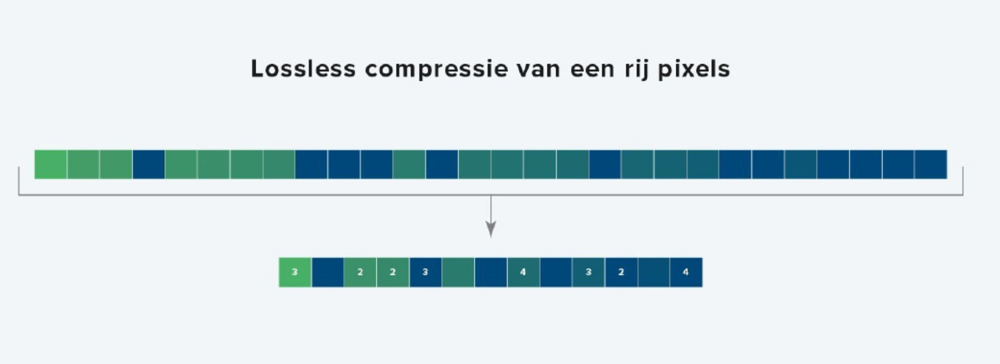

Een digitale afbeelding bestaat uit heel veel pixels, deze pixels hebben allemaal een kleur. Deze afbeeldingen nemen heel veel opslagruimte in omdat elke pixel onthouden moet worden en als je inzoomt zie je de pixels.
Hiervoor bestaat een oplossing: een vector afbeelding daarbij worden de vormen van een afbeelding opgeslagen.Hierbij worden er grafisch de vormen van de afbeelding opgeslagen waardoor je steeds de punten hebt en niet de pixels per se. Hierdoor kan je maar blijven inzoomen doordat de computer weet langs welke coördinaten hij pixels moet plaatsen.
Doordat het in een soort formule vast staat is het makkelijk om aanpassingen aan te brengen aan de hele afbeelding door wat in de formule aan te passen.
Deze methode werkt niet bij foto’s omdat die niet uit vormen bestaan maar heel veel kleuren. Dus om deze te versimpelen worden kleuren die aan elkaar lichten versimpeld als een stukje informatie in plaats van heel veel verschillende. Hierdoor zijn er heel veel minder bits nodig.
Ook audio kan verkleind worden door in plaats van alle moment op te nemen maar een paar momenten op te nemen. En dan een lijn te tekenen tussen die punten te trekken. Dit werkt omdat het snel genoeg is dat het geluid nog steeds goed in elkaar overgaat en geen geluid mist.
